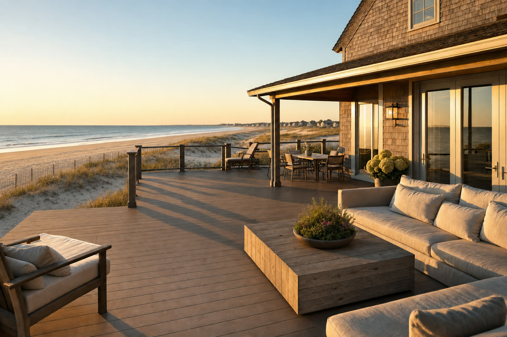
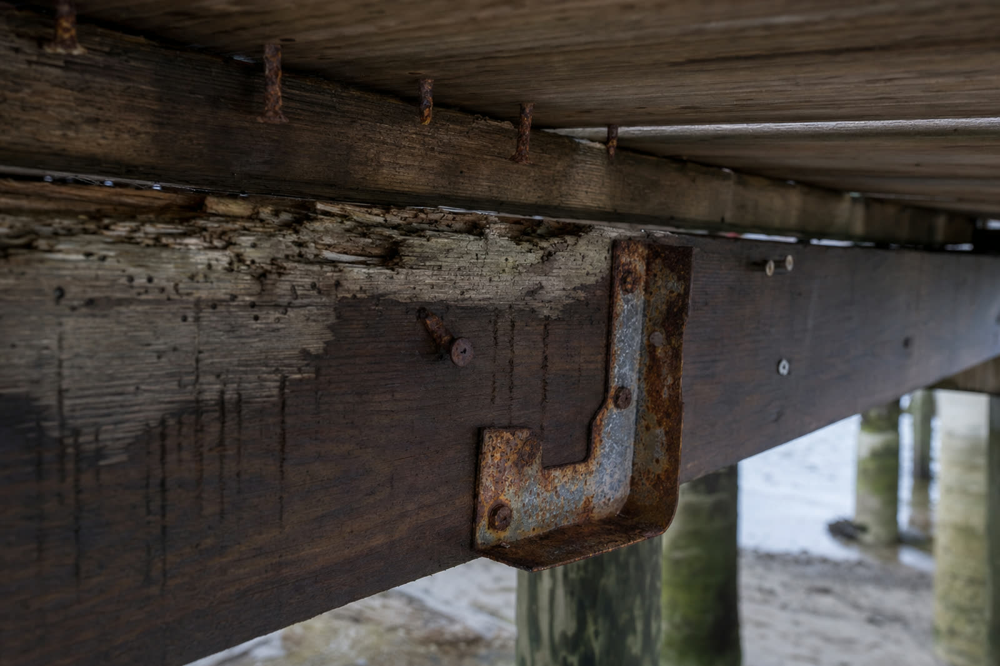
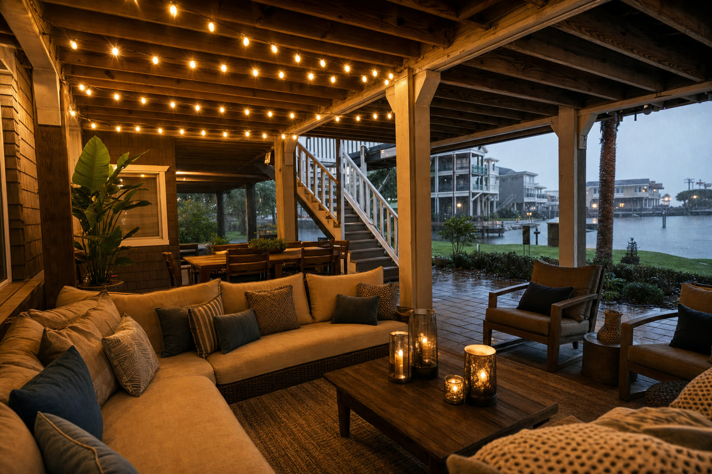

If you own a home along the New Jersey coast, you already know the salt air gets into everything. It pits patio furniture, fogs window screens, and leaves a film on the grill by midsummer. Your deck is no different, except the damage on a deck mostly happens where you cannot see it, down in the framing. A shore deck is not just a deck with a better view. It is a deck fighting a more aggressive environment, and that changes how you should build it.
Three things the coast does to a deck
Inland, the main enemy of a deck is plain rain running through the gaps between the boards. At the shore you get that plus three accelerators that make the same failures happen years sooner.
Salt air. Airborne salt settles on the framing and pulls moisture out of the air, so the wood and the hardware stay damp longer between rains. Salt also speeds up corrosion directly.
High humidity. Coastal air holds more moisture for more of the year. Framing that is shaded under the deck surface dries slowly inland and even slower at the beach.
Storms. Nor'easters and tropical systems drive sheets of rain sideways into the structure, soaking framing that a vertical rain would never reach.
Salt air eats the fasteners before it eats the wood
On a coastal deck, the hardware is usually the first thing to go. Salt particles hold moisture against screws, nails, joist hangers, and the bolts at the ledger, and that constant dampness corrodes them faster than anywhere inland. The trouble is that none of this shows on the surface. The boards still look fine while the connectors holding the deck together are quietly losing their grip underneath. By the time a railing feels loose or a board lifts, the corrosion has usually been working for years.

The wet-dry cycle never gets to finish at the beach
Every deck built with gaps between the boards lets water fall straight onto the tops of the joists, the beams, and the ledger where the deck attaches to the house. That framing is shaded, so it dries slowly. At the shore, humid salt air keeps it damp even on clear days, and the next storm arrives before it has dried out. The wood essentially never gets to fully dry. That is the exact condition fungal decay needs, which is why shore framing can rot through while the deck still looks new from above.
At the shore the framing barely dries between storms. Stop the water at the surface and the cycle never starts.
Why the common fixes fall short on the coast
Two approaches get sold as the answer for shore decks. Only one actually keeps the framing dry.
Below-joist tray retrofit
- Catches water only after it falls through the gaps
- Joists and ledger still get wet on every storm
- Salt and humidity keep the framing damp underneath
- Keeps the patio below dry, not the deck itself
Above-joist sealed system
- Stops water at the deck surface, before the framing
- Joists, beams, ledger, and fasteners stay dry
- No standing dampness for salt air to feed on
- Protects the deck and the space below it
Pressure-treated wood checks and splits in coastal sun and salt. Wood-fiber composite boards can absorb water at the cut edges and still leave the framing soaking, since they do nothing to seal the gaps. The most durable answer for a salt-air environment is a board that does not absorb water at all, built into a system that stops the water before it ever reaches the structure.
Build it dry from day one
That is what an above-joist drainage system does, and why it fits the shore so well. With AmeriDex, every cellular PVC deck board locks onto a Dexerdry seal, an automotive-grade TPE gasket, as the deck is built. The seal closes the gap between the boards, so rain and wind-driven storm water run across the surface and shed off the edge like water off a roof. The joists, beams, ledger, and fasteners never get wet, so salt air has no standing dampness to work with and the rot cycle never starts. The cellular PVC boards carry a proprietary ASA cap that resists salt, fading, and moisture, so the surface holds up to the same coastal sun that splits a wood deck.


The bonus at the shore is the space underneath. Stop the water at the surface and the area below the deck stays dry enough to actually use, which is hard to come by on a tight beach lot. If a storm is already in the forecast, our hurricane season deck prep checklist covers what to do before and after it hits. There are plenty of ways to turn that dry space into a living area, and the above-joist vs below-joist comparison lays the two approaches side by side if you want the full mechanics.
Because the seal goes in between every board as the deck is built, AmeriDex is for new construction, which makes a new shore build the right moment to design the water out for good. As a New Jersey company in Brick, we know exactly what the coast does to a deck. Request free samples to feel the board and the seal yourself, and start a free quote to size the system for your project.